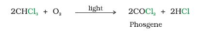
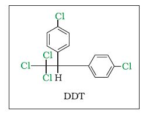

10.7 Polyhalogen Compounds
Carbon compounds containing more than one halogen atom are usually referred to as polyhalogen compounds. Many of these compounds are useful in industry and agriculture. Some polyhalogen compounds are described in this section.
10.7.1 Dichloromethane (Methylene chloride)
Dichloromethane is widely used as a solvent as a paint remover, as a propellant in aerosols, and as a process solvent in the manufacture of drugs. It is also used as a metal cleaning and finishing solvent. Methylene chloride harms the human central nervous system. Exposure to lower levels of methylene chloride in air can lead to slightly impaired hearing and vision. Higher levels of methylene chloride in air cause dizziness, nausea, tingling and numbness in the fingers and toes. In humans, direct skin contact with methylene chloride causes intense burning and mild redness of the skin. Direct contact with the eyes can burn the cornea.
10.7.2 Trichloromethane (Chloroform)
Chemically, chloroform is employed as a solvent for fats, alkaloids, iodine and other substances. The major use of chloroform today is in the production of the freon refrigerant R-22. It was once used as a general anaesthetic in surgery but has been replaced by less toxic, safer anaesthetics, such as ether. As might be expected from its use as an anaesthetic, inhaling chloroform vapours depresses the central nervous system. Breathing about 900 parts of chloroform per million parts of air (900 parts per million) for a short time can cause dizziness, fatigue, and headache. Chronic chloroform exposure may cause damage to the liver (where chloroform is metabolised to phosgene) and to the kidneys, and some people develop sores when the skin is immersed in chloroform. Chloroform is slowly oxidised by air in the presence of light to an extremely poisonous gas, carbonyl chloride, also known as phosgene. It is therefore stored in closed dark coloured bottles completely filled so that air is kept out.

10.7.3 Triiodomethane (Iodoform
It was used earlier as an antiseptic but the antiseptic properties are due to the liberation of free iodine and not due to iodoform itself. Due to its objectionable smell, it has been replaced by other formulations containing iodine.
10.7.4 Tetrachloromethane (Carbon tetrachloride
It is produced in large quantities for use in the manufacture of refrigerants and propellants for aerosol cans. It is also used as feedstock in the synthesis of chlorofluorocarbons and other chemicals, pharmaceutical manufacturing, and general solvent use. Until the mid 1960s, it was also widely used as a cleaning fluid, both in industry, as a degreasing agent, and in the home, as a spot remover and as fire extinguisher. There is some evidence that exposure to carbon tetrachloride causes liver cancer in humans. The most common effects are dizziness, light headedness, nausea and vomiting, which can cause permanent damage to nerve cells. In severe cases, these effects can lead rapidly to stupor, coma, unconsciousness or death. Exposure to CCl4 can make the heart beat irregularly or stop. The chemical may irritate the eyes on contact. When carbon tetrachloride is released into the air, it rises to the atmosphere and depletes the ozone layer. Depletion of the ozone layer is believed to increase human exposure to ultraviolet rays, leading to increased skin cancer, eye diseases and disorders, and possible disruption of the immune system.
10.7.5 Freons
The chlorofluorocarbon compounds of methane and ethane are collectively known as freons. They are extremely stable, unreactive, non-toxic, non-corrosive and easily liquefiable gases. Freon 12 (CCl2F2) is one of the most common freons in industrial use. It is manufactured from tetrachloromethane by Swarts reaction. These are usually produced for aerosol propellants, refrigeration and air conditioning purposes. By 1974, total freon production in the world was about 2 billion pounds annually. Most freon, even that used in refrigeration, eventually makes its way into the atmosphere where it diffuses unchanged into the stratosphere. In stratosphere, freon is able to initiate radical chain reactions that can upset the natural ozone balance (Unit 14, Class XI).
10.7.6 p,p'-Dichlorodiphenyltrichloroethane( DDT)
DDT, the first chlorinated organic insecticides, was originally prepared in 1873, but it was not until 1939 that Paul Muller of Geigy Pharmaceuticals in Switzerland discovered the effectiveness of DDT as an insecticide. Paul Muller was awarded the Nobel Prize in Medicine and Physiology in 1948 for this discovery. The use of DDT increased enormously on a worldwide basis after World War II, primarily because of its effectiveness against the mosquito that spreads malaria and lice that carry typhus. However, problems related to extensive use of DDT began to appear in the late 1940s. Many species of insects developed resistance to DDT, and it was also discovered to have a high toxicity towards fish. The chemical stability of DDT and its fat solubility compounded the problem. DDT is not metabolised very rapidly by animals; instead, it is deposited and stored in the fatty tissues. If ingestion continues at a steady rate, DDT builds up within the animal over time. The use of DDT was banned in the United States in 1973, although it is still in use in some other parts of the world.
